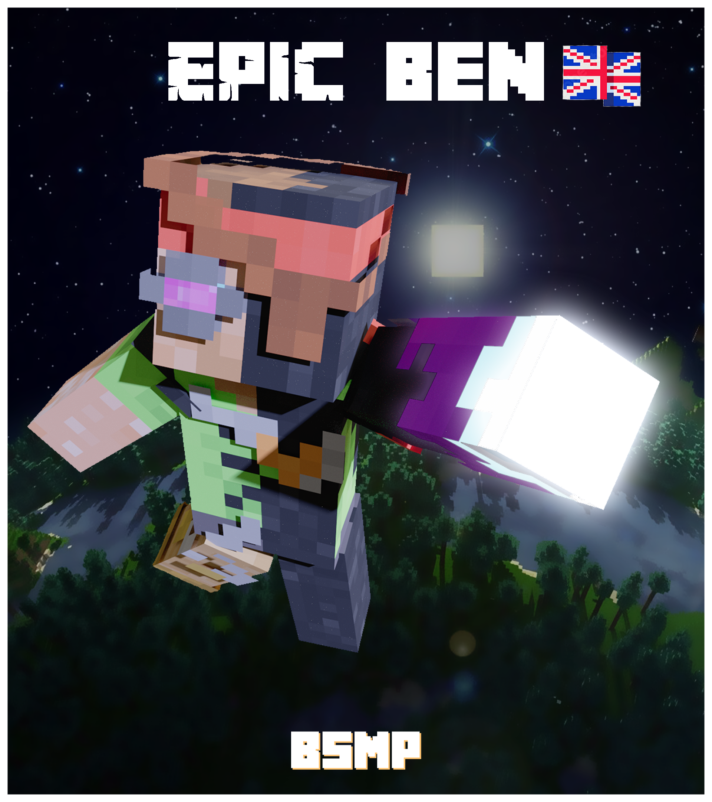
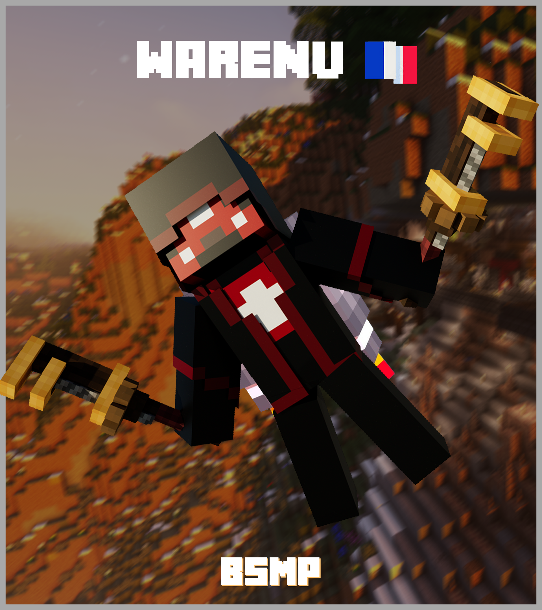
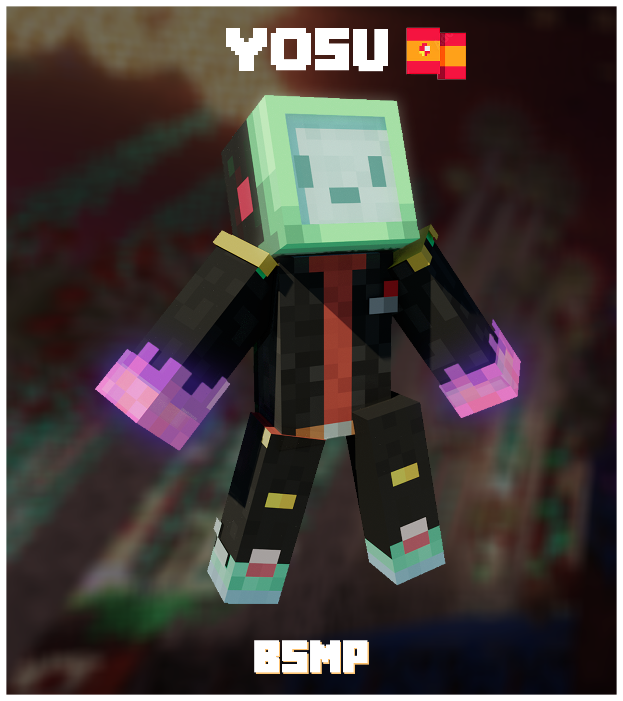

EpicBen208: https://www.twitch.tv/epicben208
WarenU: https://www.twitch.tv/waren_4ever
Yosu_Master: https://www.twitch.tv/i_am_nobodyou
TOAST1524 https://www.twitch.tv/djdoge1524
hi im EpicBen208 a Canadian minecraft twitch streamer I generaly enjoy useining redstone create mod along with other technical aspects of minecraft. generaly i like makeing make midevil themed baces and tend to enjoy colctible items includeing trophys rare blocks animals and the globes from galacticraft. me and Toast1524 both stream together and are normaly alies.
Hey, you can call me Waren, the U is silent, and I like calm and silence. I also like to destroy dungeons and explore the world. For a perspective, I stream on twitch and am comparable to the streamer : Etoiles. Also, I usually make my own farms, or get things from adventures. Sometimes I get gifts from people and always give them useful things because I don't like the feeling of being redeeming.
I'm an old player named Yosu_Master who enjoys survival multi player servers, I don't really that much of a consider myself a gamer, but I'm very good at Minecraft PvE and hardcore/survival. I am also a builder and in my free time I enjoy learn minecraft commands, creating detailed maps, im a very talented artist and stream occasionally to my amazeing comunity
Hey my name is TOAST1524 but you can call me TOAST, I enjoy the building aspects of minecraft as well as the war aspect in any minecraft server. I like to build over the top house's to one up my friends or to set traps a kill enemy players. I stream on my twitch with EpicBen208 sometimes and on most servers we are friends and work together.